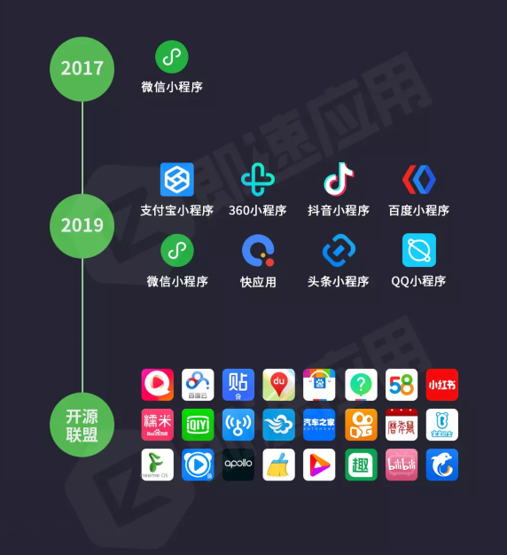
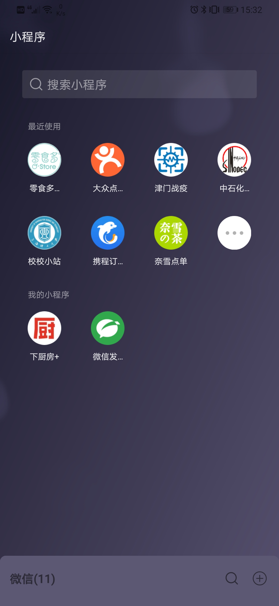

微信小程序创新设计与开发实践
任课教师：王丹
课程编号：36810310
课程第一节课，引导学生建立对小程序的整体认知，了解课程全貌。本课程面向全校所有专业学生，零基础入门。
掌握小程序的定义、特点和各平台发展现状
了解微信小程序的优势、入口和应用场景
认识传统开发模式与云开发模式的技术体系
了解 AI 技术对小程序开发的影响和应用趋势
清晰课程结构、考核方式和学习要求
小程序是一种无需下载安装即可使用的应用，它通常依托于某个平台级应用运行。
依托平台运行，不占用手机存储
扫一扫或搜一搜即可打开应用
生命周期短、轻量化，无需卸载
开发难度不及 App，可持续迭代
结合日常应用场景，让学生思考小程序的其他特点
提问：你日常使用过哪些小程序？它们给你带来了什么便利？

社交 · 生活服务
支付 · 本地服务
AI · 搜索
短视频 · 电商
微信及WeChat合并月活跃用户
微信搜一搜月活跃用户
微信小程序日活跃用户（DAU）
无需安装，开发成本相对较低
同学们思考还有哪些新上线的功能？

小程序代表了轻量化、即时化应用的发展方向
相比 App 开发成本大幅降低
快速上线，迭代敏捷
无需用户更新，热更新
依托社交网络快速传播
产品展示、在线下单、物流配送
企业信息、产品及服务信息展示与传播
营销功能，聚拢用户、提升销量
便捷点餐、就餐、付费、领券
在线预约、订房、缴费、退房
同城服务快速打开、订购、预约
| 对比维度 | 小程序 | App |
|---|---|---|
| 安装方式 | 无需下载安装 | 需下载安装 |
| 使用门槛 | 低，即用即走 | 较高，需注册登录 |
| 开发成本 | 低，周期短 | 高，周期长 |
| 功能能力 | 轻量化，依托平台 | 功能完整，独立运行 |
AI 正在深刻改变应用开发的方式、体验和能力
AI 辅助编码、智能调试
个性化推荐、智能交互
语音、图像、自然语言处理能力接入
通过自然语言处理技术，让小程序具备自动理解用户问题并给出精准回复的能力，实现 7×24 小时在线服务。
将语音识别与合成技术融入小程序，让用户通过语音完成输入、搜索和获取反馈，提升操作效率与无障碍体验。
利用计算机视觉技术，让小程序能够"看懂"图片中的内容，实现从图像到信息的智能转换。
基于用户行为数据与深度学习算法，为每个用户提供千人千面的个性化内容，提升用户粘性与转化率。
利用 AI 技术简化表单填写流程，自动识别用户信息并完成校验，同时辅助生成规范内容，大幅提升填单效率。
基于自然语言处理与向量检索技术，让小程序能够理解用户搜索意图，返回最相关的结果，而非简单关键词匹配。
AI 是学习辅助工具，不能替代独立思考和动手实践
期末报告禁止直接使用 AI 生成内容
合理利用 AI 提升学习效率，而非依赖 AI 完成作业
1. 构思、设计自己的微信小程序 2. 读懂模板小程序代码内容
小程序是什么
发展沿革 · 应用场景
小程序申请注册
账号申请 · 注册流程
开发工具与项目结构
下载 · 项目创建
小程序框架
JSON · WXML · WXSS · JS
常用组件介绍
基础组件 · 扩展组件
接口与能力
网络 · 存储 · 媒体
云函数 · 云数据库 · 云存储
概念认知
LLM 兴起 · 生成机制 · 主流模型
Prompt 工程
从 LLM 到 Agent · 工作流程 · Skill
国内外 Agent 平台
多敲代码
多看官方文档
理解逻辑
学以致用
合理用 AI，独立思考
1. 查看微信官方文档，了解微信小程序学习内容
2. 组队交流
3. 组队建议：多学科交叉，技术融合
下节课预告
第二章 · 开发工具和项目结构
任课教师：王丹
课程编号：36810310
本章动手实操为主，带大家完成小程序账号注册、开发工具安装、项目创建，并理解项目的目录结构与代码构成。
微信公众平台：https://mp.weixin.qq.com/
在小程序管理平台，可以管理你的小程序的权限，查看数据报表，发布小程序等操作。
添加项目成员、体验成员，分配操作权限
查看访问、留存等运营数据
提交审核、发布小程序新版本
开发 → 开发设置：查看 AppID（小程序 ID）
64 位系统选择 Windows 64 稳定版
按芯片选择 Intel / Apple 芯片版本
项目列表页，管理本机所有小程序项目，可新建、导入项目
填写项目名称、目录、AppID，选择后端服务与模板
左侧模拟器 + 中间代码编辑区 + 右侧调试器，"编译"可实时预览效果
新建一个小程序项目（测试号）
后端服务：暂不使用云开发
可以选择一个官方模板：JavaScript 模板
新建后尝试使用开发工具：编译、预览、目录切换
主要存放小程序的页面文件，其中每个文件夹为一个页面
存放全局的 .js 文件，公共用到的事件处理代码可放这里，供全局调用
工具配置文件：界面颜色、编译配置等个性化配置，换电脑重新安装工具时据此恢复
配置小程序及其页面是否允许被微信索引；没有此文件则默认所有页面都允许被索引
小程序包含一个描述整体程序的 app 和多个描述各自页面的 page。
小程序逻辑，必须放在项目的根目录
小程序公共配置，必须放在项目的根目录
小程序公共样式表，控制全局样式，非必须
JSON 是一种数据格式，并不是编程语言，在小程序中扮演静态配置的角色
描述当前页面的结构，和 HTML 非常相似，由标签、属性等构成
具有 CSS 大部分特性，小程序也做了一些扩充和修改
编写 JS 脚本文件来响应用户的点击、获取用户的位置等操作
假设我们新建一个命名为 index 的页面，需要包含的四个不同类型的文件分别是：
以不同的方式，新建几个页面
方式一：在 app.json 的 pages 中添加页面路径，保存后自动生成文件
方式二：开发工具中"新建 Page"，输入页面名称自动创建
任课教师：王丹
课程编号：36810310
小程序的配置全部通过 JSON 完成。本章先掌握 JSON 语法，再学习 app.json 全局配置与页面级配置。
轻量级数据交换格式，层次结构清晰简洁
app.json：页面路径、窗口表现、多 tab 等
页面级 .json，覆盖全局 window 配置
JSON（JavaScript Object Notation，JS 对象简谱）是一种轻量级的数据交换格式，层次结构清晰简洁。
用大括号 { } 包起来，里面的每一条信息都是一个"键值对"（键 : 值），中间用冒号 : 分开，不同信息用逗号 , 隔开。
取值：包裹信息.电话 → "66666666666"；取"物品"呢？
值可以是对象 { }（再嵌套键值对），也可以是数组 [ ]（如 "物品" 的值是一列物品）。
怎么取寄件人的信息？
怎么取物品信息？
上面的包裹信息无换行缩进，代码可读性比较差，如何优化？
对嵌套结构换行 + 缩进，一层缩进一个层级，结构一目了然——这也是小程序所有 .json 配置文件的写法。
app.json 用来对微信小程序进行全局配置，决定页面文件的路径、窗口表现、设置网络超时时间、设置多 tab 等。我们可以根据自己的需求设置对应的配置项属性。
页面路径列表，第一个为首页
导航栏颜色、标题、背景等窗口表现
底部 / 顶部 tab 栏及切换页面
网络请求的超时时间
如果小程序是一个多 tab 应用（客户端窗口的底部或顶部有 tab 栏可以切换页面），可以通过 tabBar 配置项指定 tab 栏的表现，以及 tab 切换时显示的对应页面。
每一个小程序页面也可以使用 .json 文件来对本页面的窗口表现进行配置。页面的配置只能设置 app.json 中部分 window 配置项的内容，页面中配置项会覆盖 app.json 的 window 中相同的配置项。
修改新建项目的全局、页面配置，观察小程序页面变化
新增新建项目的全局、页面配置，观察小程序页面变化
任课教师：王丹
电话：55271110 · 课程编号：36810310
本章是小程序开发的布局核心，从理解盒子模型出发，掌握 margin / border / padding 三大属性，最终学会 Flex 弹性布局，能独立完成各种页面排列。
重点突出 · 流程明确
功能 > 广告
导航明确 · 反馈及时
异常可控
减少输入 · 避免误操作
利用接口提升性能
使用微信标准控件
保持页面体验一致
view 是小程序最基础的布局组件，作用类似 HTML 的 div，用于内容分组与样式控制。
1. 有内容：<标签 属性> 内容 </标签>
2. 无内容：<标签 属性 />
组件通过 class 与 style 引用 CSS 样式。
WXSS 具有 CSS 大部分特性，对微信小程序进行了扩充与修改。
| 属性 | 作用 |
|---|---|
| width | 宽度 |
| height | 高度 |
| border | 边框 |
| font-size | 字号 |
| background-color | 背景色 |
| color | 文字颜色 |
推荐使用相对路径，避免绝对路径。
| 路径 | 含义 |
|---|---|
| ./ | 当前所在目录 |
| ../ | 上一层目录 |
| / | 根目录（以 / 开头） |
打开一个茶叶包装盒，你会看到：
| 要素 | 作用 |
|---|---|
| margin | 外边距 —— 盒子与盒子之间的距离 |
| border | 边框 —— 盒子的纸壳边界 |
| padding | 内边距 —— 内容与边框之间的空间 |
| content | 内容 —— 盒子的主要信息 |
分别控制盒子到页面上、下、左、右边缘的距离。
| 属性 | 说明 |
|---|---|
| margin-top | 上方外边距 |
| margin-bottom | 下方外边距 |
| margin-left | 左方外边距 |
| margin-right | 右方外边距 |
上 → 右 → 下 → 左，顺时针依次填写。
| 属性 | 说明 |
|---|---|
| border-color | 边框颜色 |
| border-width | 边框宽度 |
| border-style | 边框类型 |
透明留白，无修饰属性（无颜色、宽度等）。
| 属性 | 说明 |
|---|---|
| padding-top | 上方内边距 |
| padding-bottom | 下方内边距 |
| padding-left | 左方内边距 |
| padding-right | 右方内边距 |
Flex 是 Flexible Box 的缩写，意为"弹性布局"，为盒状模型提供最大的灵活性。
容器 (container)：启用 Flex 布局的元素
项目 (item)：容器的子元素
主轴 (main)：项目排列的方向
交叉轴 (cross)：垂直于主轴的方向
| 属性 | 常用值 | 说明 |
|---|---|---|
| flex-direction | row · row-reverse column · column-reverse |
决定主轴方向，默认 row（横向） |
| flex-wrap | nowrap · wrap · wrap-reverse | 决定换行行为，默认 nowrap（不换行） |
| flex-flow | row nowrap | 上述两个属性的简写 |
| justify-content | flex-start · flex-end center · space-between · space-around |
决定主轴对齐方式 |
| align-items | flex-start · flex-end center · baseline · stretch |
决定交叉轴对齐方式 |
| align-content | flex-start · center space-between · stretch |
多根轴线时的对齐（需配合 wrap） |
| 属性 | 默认值 | 说明 |
|---|---|---|
| order | 0 | 排列顺序，数值越小越靠前 |
| flex-grow | 0 | 放大比例，分配剩余空间 |
| flex-shrink | 1 | 缩小比例，空间不足时的收缩 |
| flex-basis | auto | 分配空间前项目占据的主轴尺寸 |
| flex | 0 1 auto | 三属性简写，推荐优先使用 |
| align-self | auto | 单个项目的交叉轴对齐（覆盖父级） |
大模型 (LLM)：基于海量文本训练的生成式 AI，能理解自然语言、生成代码、回答问题。
智能体 (Agent)：会用工具、有记忆、会规划的 AI，编程智能体能读写代码、跑命令、调试。
提示词 (Prompt)：写给 AI 的指令，决定输出质量——好的提示词 = 明确的产出。
view 容器内的三个子元素横向等距居中显示，给出完整的 class 名称和样式。
AI 是学习辅助工具，不能替代独立思考和动手实践
期末报告禁止直接使用 AI 生成内容
合理利用 AI 提升学习效率，而非依赖 AI 完成作业
任课教师：王丹
电话：55271110 · 课程编号：36810310
本章从视图容器与媒体组件入手，掌握 image、Swiper 的使用；通过基础表单案例系统学习 input、checkbox、picker、button、navigator 等常用组件；理解样式引用、数据绑定、事件绑定三大基础概念。
商品图 · 九宫格 · 头像
第 3 页 →
首页 Banner · 酒店推荐
第 4 页 →
搜索框 · 表单输入
第 5 页 →
评价 · 反馈 · 退款说明
第 6 页 →
乘车人 · 支付方式
第 7 页 →
日期 · 时间 · 省市区
第 8 页 →
立即购买 · 提交 · 结算
第 9 页 →
点击跳转详情页
第 10 页 →
这些组件 = 几乎所有小程序页面的搭建能力
image（商品图/封面/头像）、swiper（Banner 轮播）、navigator（点击卡片进入详情页）input（单行文本）、textarea（多行文本）、checkbox/radio（选择）、picker（选择器）、button（提交/确认）view / image / Swiper
text、scroll-view 自学拓展
input / checkbox / radio
picker / button / navigator
checkbox-group / radio-group
picker 五种 mode
navigator 5 种 open-type
navigate / redirect / switchTab
✅ 组件精准编写 · 组件自学能力 · 深刻理解前端代码框架
✅ 掌握样式引用、数据绑定、事件绑定概念与方法
image 组件支持 JPG、PNG、SVG、WEBP、GIF 等主流图片格式，选对格式直接影响体积、清晰度、兼容性。
| 格式 | 特点 | 适用场景 |
|---|---|---|
| JPG | 有损压缩、压缩率高、不支持透明 | 普通照片、banner 大图 |
| PNG | 无损、支持透明、兼容性好 | 需要透明背景的图标、UI |
| SVG | 矢量图、代码内嵌、体积小 | 图标、logo、样式简单的图 |
| WEBP | 压缩程度好、iOS webview 有兼容问题 | 面向安卓的优化场景 |
| GIF | 支持动画、体积较大 | 加载动效、短动画 |
| 属性 | 类型 | 说明 |
|---|---|---|
| src | String | 图片路径（必填） |
| mode | String | 裁剪模式，见右侧 |
| lazy-load | Boolean | 懒加载 |
| webp | Boolean | 是否使用 webp 格式 |
| mode 值 | 效果 |
|---|---|
| scaleToFill | 拉伸（可能变形） |
| aspectFit | 等比缩放、contain，完整显示 |
| aspectFill | 等比缩放、cover，填满容器 |
| widthFix | 宽度固定，高度自适应，常用于列表 |
小程序图片来源主要有两类：手工裁剪设计 + 开源图标库。合理管理资源是保持项目轻量、视觉统一的关键。
阿里开源图标库，海量矢量图标，可导出 SVG / PNG / CSS。
background-image 引用。
| 属性 | 类型 | 说明 |
|---|---|---|
| indicator-dots | Boolean | 显示指示点 |
| autoplay | Boolean | 自动播放 |
| interval | Number | 切换间隔(ms) |
| circular | Boolean | 循环播放 |
| vertical | Boolean | 竖向滑动 |
autoplay + circular 组合是首页 Banner标配。
以用户信息表单为例，串联本章要学的核心组件：input、checkbox、picker、button、navigator——理解组件如何在真实页面中协作，是事件绑定的最佳练手场景。
输入框
多行输入（自学）
开关（自学）
多选项目
单选项目
基础/时间/日期/省市区
| 属性 | 类型 | 说明 |
|---|---|---|
| value | String | 输入框的值 |
| placeholder | String | 占位提示文字 |
| type | String | keyboard/text/digit/number |
| maxlength | Number | 最大输入长度 |
| bindinput | Event | 输入事件绑定 |
value · placeholder · placeholder-style · placeholder-class · disabled · maxlength · focus 的用法与 input 一致。
开关选择器（自学）
用于切换开/关状态
多选项目
组内多个可同时选
单选项目
组内自动互斥
普通选择器
从数组选一项
多列选择器
级联（如省→市→区）
时间选择器
格式 hh:mm
日期选择器
格式 YYYY-MM-DD
微信版本 1.4.0 / 1.5.0 以上支持 · 用于地址、定位类场景
| mode | 常用属性 | 值格式 | 典型场景 |
|---|---|---|---|
| selector | range · range-key | — | 从数组中选一项 |
| multiSelector | range（二维数组） | — | 多列级联选择 |
| time | start · end | hh:mm |
预约、班次时间 |
| date | start · end · fields | YYYY-MM-DD |
生日、有效期 |
| region | custom-item | ["省","市","区"] | 收货地址 |
| 属性 | 类型 | 说明 |
|---|---|---|
| type | String | primary / warn / default |
| size | String | default / mini |
| plain | Boolean | 是否镂空样式 |
| disabled | Boolean | 禁用 |
| form-type | String | submit / reset |
| bindtap | Event | 点击事件 |
form-type="submit" 用于提交表单；
form-type="reset" 用于重置表单。
| open-type | 行为 | 是否可返回 |
|---|---|---|
| navigate | 跳转至新页面（可返回上一层） | ✅ 可返回 |
| redirect | 打开新页面，关闭当前页面 | ❌ 不可返回 |
| switchTab | 切换 tab 页面（url 必须是 tabBar 页面） | — |
| reLaunch | 关闭所有页面，打开应用内某个页面 | ❌ 不可返回 |
| navigateBack | 返回上一层（firstPage 不可用，无需 url） | — |
微信官方文档有 100+ 组件，每个组件几十个属性。用 AI 可以：① 快速定位属性 · ② 解释差异 · ③ 生成示例代码，节省查文档的时间。
id=1，并说明 open-type 各值的区别。
| 组件 | 关键属性 |
|---|---|
| image | src · mode · lazy-load |
| swiper | autoplay · circular · indicator-dots |
| input | value · type · maxlength · bindinput |
| picker | mode · range · value · bindchange |
| button | type · size · form-type · bindtap |
| navigator | url · open-type · delta |
需求：包含 输入框（问题） + 文本域（详情） + picker（类型） + button（提交）。用 AI 生成代码，再手动理解每行。
✅ 用 AI 查文档、生成样板、解释报错
✅ 用 AI 辅助学习和验证理解
❌ 禁止直接粘贴 AI 结果当作独立作业
❌ 期末报告需注明 AI 使用部分并附提示词
任课教师：王丹
课程补充模块 · 2026 年 5 月
从规则到生成智能的演变历程
核心技术原理与架构解析
GPT / Claude / Llama 等模型生态概览
掌握人与模型高效交互的艺术
第五章 Prompt 实战 · 第七章 从 LLM 到 Agent（智能体）
探索技术的起源与根基
分析技术突破的关键节点
探讨技术与社会的辩证关系
大语言模型并非凭空出现，它是人工智能领域数十年技术积累的成果。它经历了从早期的规则系统、统计学习，逐步演进到深度学习和 Transformer 架构的完整历程，是技术迭代的必然结果。
GPU 等高性能计算硬件普及，训练超大规模模型成为可能，突破计算瓶颈
互联网发展提供海量文本数据，为模型学习提供充足"养料"，奠定训练基础
Transformer 架构解决长文本处理和并行计算难题，大幅提升模型效率
科技巨头巨额投入和场景探索，加速技术成熟和落地，形成良性循环
人工编写规则与逻辑推理
代表：专家系统
数据驱动，从数据学习模式
代表：SVM · 概率模型
多层神经网络模拟人脑
代表：Transformer · LLM
拆分文本为最小语义单元
——Token
自注意力机制
分析 Token 关联
计算概率分布
选择最优候选
逐字输出，加入上下文
循环往复
Token 是文本的最小拆分单位（词/子词/符号），是模型理解和生成文本的基础。生成机制本质是基于上下文的条件概率预测 —— 逐个预测下一个最可能的 Token。
在海量文本数据上进行无监督学习，构建基础认知能力。学习通用的语言规律、语法结构和世界知识。
通过指令微调 (Instruction Tuning) 对齐人类意图，利用 RLHF（人类反馈强化学习）优化输出，确保安全与有用性。
GPT-4 · Claude · 文心一言 · 豆包 · 讯飞星火
特点：性能强大，商业化成熟，数据隐私保护严格，开箱即用
ChatGLM · Qwen · Baichuan · DeepSeek
特点：部署灵活，可定制性高，社区活跃，适合二次开发与学习研究
GPT-4V · Gemini · 文心一言（多模态）
特点：融合文本、图像、音频等多感官输入，交互更自然
文心一言：内容创作 · 智能客服 · 教育辅导 | 豆包：智能助手 · 生活服务 · 代码辅助 | 阿福：金融风控 · 医疗咨询 | DeepSeek：编程辅助 · 代码生成 | 讯飞星火：语音助手 · 实时翻译 · 会议记录
是"语言" —— 你具体输入给 AI 的那段话，比如"请写一首关于春天的诗"。
→ 实践 / 内容
是"修辞学"或"写作技巧" —— 研究"如何写出更有效的语言"的学问，包含框架、方法和优化策略。
→ 理论 / 方法论
清晰定义任务类型和期望结果，确保模型理解核心需求
补充上下文信息，帮助模型理解任务场景，避免歧义
规定输出结构（列表/表格/段落），让结果更规整、易读
提升效率（快速获得高质量回答） · 控制输出（避免无效信息） · 解锁能力（充分发挥模型潜力） · 适应未来（与 AI 高效协作的核心技能）
赋予模型特定身份（专家/顾问），提升专业性
复杂任务拆解为多步骤，逐步引导
"请一步步推理"，提升逻辑准确性
字数/格式/语气约束，输出更可控
Few-shot，用 1-3 个示例模仿格式
用"1."等引导词指定输出结构
用【】等符号标记不同语义单元
Markdown/JSON/YAML，便于程序化处理
任课教师：王丹
课程补充模块 · 2026 年 5 月
它不仅拥有大模型的推理能力，还集成了记忆、规划和工具调用功能，能够独立完成复杂任务。
继承 LLM 的思考与决策能力
长程上下文 · 多轮交互
调用外部 API 完成实际任务
· 通常只能进行单轮回答
· 缺乏上下文记忆
· 输出文本，不执行实际操作
· 例：ChatGPT 直接对话
· 支持多轮执行
· 具备长程记忆
· 可调用工具与外部 API
· 例：Trae · WorkBuddy · 悟空
LLM 只走到"接收 → 理解 → 输出文本"，Agent 则延伸到拆解、规划、调用外部工具、执行操作，最终交付可落地的实际结果（文件、代码、报告、邮件等）。
类比：LLM 像一个人的大脑（会思考推理），Skill 是专业证书+实战经验（会具体操作：查天气 → 发邮件 → 订机票 → 写 Excel 公式）。
开源"超级 AI 助理"，能接管键盘鼠标自主处理邮件/日历/代码
难度：★★★ 较高 · 费用：开源免费 + 自付 APIopenclaw.ai
轻量级 Agent 框架，为开发者提供快速构建智能体基础
难度：★★★ 较高 · 费用：开源免费
AI 原生桌面智能体，批量处理文档/生成 PPT/分析数据
难度：★☆☆ 最容易 · 费用：5000 Credits 免费体验workbuddy.qq.com
AI 原生 IDE，理解需求、调用工具、独立完成开发任务
难度：★★☆ 中等 · 费用：目前免费
企业办公智能体，直接操作钉钉内应用完成工作流
难度：★☆☆ 最容易 · 费用：按用量计费
使用 WorkBuddy 等开箱即用产品，自带大量 Skill，通过自然语言即可调用。
例：说"帮我做季度报告 PPT"，自动调用 PPT 技能。
在支持自定义的平台（如 Coze 扣子、Dify），以填表方式配置提示词模板、接入参数、动作步骤，无需编写代码。
编写 Skill 代码并注册到 Agent 平台。可参考 OpenClaw 等开源框架的 Skill 开发文档。
从规则引擎到生成式智能，见证 AI 跨越式发展
基于 Token 预测与概率游戏，理解大模型核心运作原理
探索广泛的应用场景版图，同时警惕技术风险
掌握有效交互的关键技巧，精准引导模型输出
从 LLM 工具调用迈向自主 Agent，探索更智能未来
坚持技术向善，理性使用 AI，符合人类共同利益
任课教师：王丹 · 王山山
电话：55271110 · 课程编号：36810310
本章让静态页面动起来：通过事件绑定响应用户操作，通过常用 API调用微信底层能力（提示、弹窗、路由、存储、支付等），完成数据绑定与事件触发的闭环。
页面不只是"看"，还要能"用"。用户点击、输入、滑动……程序都要给出反馈。
点击、滑动、键盘输入、选择等
状态更新、界面变化、数据请求
输入 → 处理 → 展示，形成回路
用 {{data}} 把 JS 中的变量渲染到 WXML 里；数据一变，视图自动更新。
用 bindxxx 把组件事件绑定到 JS 函数；用户操作时，函数被调用。
事件修改 data → 视图更新（数据绑定）；视图展示 data → 用户看到变化（数据绑定）。两者配合构成完整的交互闭环。
在用户输入过程中（每键入一个字符）持续触发，适合实时校验、字数统计、联想搜索。
在选择类组件值确定改变后触发；比输入事件更"稳"，常用于提交前的最终校验。
值改变完成时触发
输入框失去焦点时触发
在组件属性上添加 bindtap，赋一个函数名。当点击该组件时，触发对应的函数执行。
多层标签嵌套时使用 bindtap 绑定事件，里层事件发生后，外层会相应触发（点击事件向外层传递）。
点击内层，内层+外层函数都执行
点击内层，仅内层函数执行
应用程序编程接口。把函数封装起来给开发者调用，好多的功能不需要你去实现，只要会调用即可。
把底层能力打包，开发者只关心"怎么调"，不关心"怎么实现"
通过 wx.xxx() 直接调用微信提供的能力
API 不专属于小程序，任何编程语言/形态都有对应概念
wx.request
wx.saveImageToPhotosAlbum
wx.setStorageSync
wx.getSystemInfo
showToast / showModal
navigateTo / redirectTo …
wx.requestPayment
wx.getRecorderManager
wx.getLocation
短暂的信息提示（成功/失败/警告），1.5s 后自动消失，不打断用户操作。
成功（绿色）
失败（红色）
加载中（不自动消失，需主动关闭）
需要用户明确确认/取消的操作（如删除、退出、支付确认），不会自动消失。
通过 URL 的 ? 传递参数，多个参数用 & 分隔；在目标页 onLoad(options) 中读取。
任课教师：王丹
课程编号：36810310
本章让小程序能上线、能维护：掌握生命周期、公众平台与成员管理、前后台数据交互，最后简介云开发这一免服务器方案。
页面在加载、显示、隐藏、卸载等关键节点，会依次触发对应函数。
onLoad 里取参数与初始化；onShow 里刷新数据；onUnload 里做资源清理。
https://mp.weixin.qq.com/ —— 账号 + 扫码登录
若未注册，先在公众平台按引导完成注册与主体认证
输入账号密码 + 微信扫码验证身份
在开发管理 → 开发设置 中查看 AppID（小程序的唯一标识）
打开项目时把 AppID 填入项目配置 → AppID；也可在项目的 project.config.json 中修改。
在公众平台 成员管理 里为开发者添加权限，共同协作。
添加协作者微信号，分配角色
可上传代码，不能发布
可管理素材、内容与回复
修改的数据重新编译后没有保存（内存态）
只处理用户在本机的输入与展示
数据持久化到服务端
通过接口或服务端存储，实现数据持久化与共享
POST 提交
GET 查询
PUT 修改
DELETE 删除
微信官方提供的云端一体化能力，开发者无需自建服务器即可完成数据存储、后端逻辑与文件管理。
NoSQL 数据库，直接在小程序内读写，无需 API
云端运行 Node.js 函数，替代自建后端接口
托管图片/文件，返回可访问的 CDN 链接
无需编写后端接口与运维，直接调用云数据库
官方弹性扩容，按量计费；免费额度足够个人学习
天然集成微信生态，权限可控，避免密钥泄漏
提供登录、鉴权、支付、客服消息等常用能力
onLoad / onShow / onReady / onHide / onUnload 五个钩子
公众平台 → 项目配置 → 成员管理，三步完成协作配置
数据绑定 + 事件绑定 + 参数传递 + CRUD
云数据库 / 云函数 / 云存储 —— 免服务器的一体化方案
image · 商品图/分类图标（mode="aspectFill" 保持比例）swiper · 顶部 Banner 轮播（autoplay + indicator-dots）navigator · 点击商品进入详情页（url="/pages/detail/detail?id=1"）
swiper · 优惠券轮播 + circular 循环image · 餐厅封面（cover 属性 = cover）navigator · 点击卡片进入商家详情
swiper · 顶部促销轮播image · 品牌 Logo（lazy-load 懒加载）image · 商品主图（resized 压缩）
image · 视频封面（cover-mode = aspectFill）image · 头像（circle-crop 圆形裁剪）navigator · 点击进入视频/商品
image · 笔记封面 + 头像 + 图标（多种尺寸混合）navigator · 进入笔记详情页
swiper · 目的地轮播（自动播放）image · 景点/酒店封面（mode="widthFix"）navigator · 点击酒店预订进入详情
picker mode="date" · 出发日期选择input · 出发/到达站（type="text"）checkbox-group · 勾选乘车人（多选）button · 查询按钮（type="primary"）
input · 联系人 / 手机号（type="number"）picker mode="region" · 省市区级联input · 详细地址button · 保存按钮
radio-group · 辣度单选textarea · 订单备注（多行 · maxlength="200"）button form-type="submit" · 确认下单
checkbox · 选择退款原因textarea · 问题描述button form-type="submit" · 提交
input · 寄/收件信息（readonly 触发 picker）picker mode="time" · 取件时间checkbox-group · 增值服务button · 寄件按钮
picker mode="multiSelector" · 问题分类textarea · 详细描述（占位符 · 字符计数）input · 联系方式button form-type="submit" · 提交